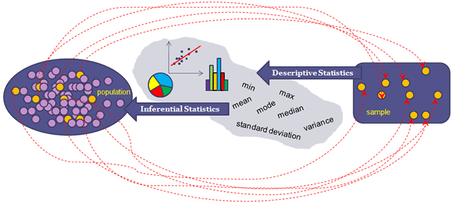
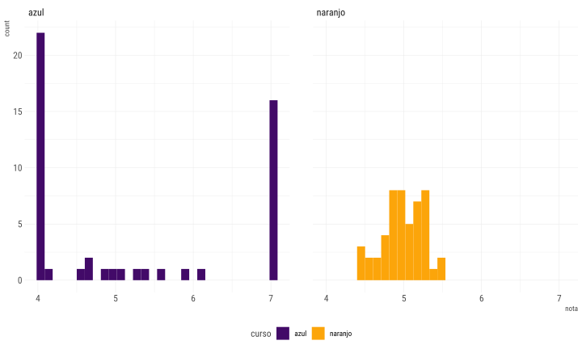

Computación Estadística con R
Introducción a la Estadística
Joshua Kunst
Definiciones
- Estadística. Rama matemática que estudia observaciones/mediciones de una población; usualmente de una muestra
- Población. Conjunto de individuos, elementos de interés
- Muestra. Una parte (subconjunto) de la población
- Muestreo. Proceso de selección de la muestra (algoritmo)
- Unidad de Muestreo. Es uno o más elementos de la población. El total constituyen la población
Ejercicio Motivacional
- Tenemos una tienda y cierta cantidad de clientes, digamos 20 (problación)
- Estamos preocupado de conocer la satisafacción promedio de nuestros clientes (parámetro de interés)
- Por dinero y tiempo (= dinero) podemos hacer solo 5 llamadas (unidad de muestreo)
Las 20 satifacciones en escala de 1 a 10 son las siguientes en cierto orden:
2, 2, 3, 3, 3, 4, 5, 6, 7, 7, 7, 8, 8, 8, 9, 9, 9, 10, 10, 10
Por tanto nuestra la satisfacción promedio de nuestros clientes es 6.5
No las conocemos
Dimensión paralela 1
Supongamos que seleccionamos los primeros de nuestra lista por comodidad (Proceso de muestreo)
2 2 3 3 3
Y así nuestro satisfacción promedio de satisfacción en la muestra es 2.6
Dimensión paralela 2
Supongamos que seleccionamos los últimos de nuestra lista por que nuestra tienda es Les Contreras
9 9 10 10 10
Y así nuestro satisfacción promedio de satisfacción en la muestra es 9.6
¿Cuál es la dimesión correcta?
Las dimensiones 1 y 2 comete el error de sesgo por selección
https://www.youtube.com/watch?v=p52Nep7CBdQ
Entonces ¿qué hacer?
Tipos de Estadística
Descriptiva e Inferencial

Tipos de Estadística

Estadística Descriptiva
Estadística Descriptiva
Conjunto de procedimientos para resumir datos
- Medidas de tendencia central y dispersión. No solo basta con ver que valores puede tomar una variable
- Visualización de datos. Distintos gráficos nos cuentan diferente información acerca de la variable(s)
Sintetizar información
Medidas de Tendencia y Dispersión
Son indicadores (generalmente un número) obtenidos de los datos que resumen información y nos hablan de alguna característica de la distribución de la variable
Nos ayudan a tener una idea más fina en donde se concentran las variables y que tan concentrados están los valores
Medidas de Tendencia Central
Nos señalan el valor en torno al cual se concentran los datos
- Media o Promedio: La suma de los datos dividido por la cantidad de los mismos
- Mediana: Es el valor que está al medio cuando los datos se ordenan
- Moda: Es el valor que más se repite. Este se usa cuando la variable es discreta
Medidas de Dispersión
Son valores que nos describen la dispersión de los datos. Es decir, que tan concentrados están:
- Desviación estándar: Mide el grado de dispersión en torno a la media
- Rango: Es el tamaño del intervalo que cubren los datos, el mayor valor menos el mínimo
- Quantiles: Valores donde se acumula % de información
Ejercicio
Supongamos que debemos decidir en curso debe ir nuestro hijo/sobrino/simil, entre el curso narnajo o azul. Nos dicen que el promedio de notas finales del año anterior para cada curso fue.
| curso | cantidad_de_alumnos | promedio |
|---|---|---|
| azul | 50 | 5.23 |
| naranjo | 50 | 4.99 |
Más información:
| curso | cantidad_de_alumnos | promedio | maxima_nota |
|---|---|---|---|
| azul | 50 | 5.23 | 7.00 |
| naranjo | 50 | 4.99 | 5.53 |

Quizás un poco más de información ayuda
| estadistico | azul | naranjo |
|---|---|---|
| cantidad_de_alumnos | 50.00 | 50.00 |
| desviacion_estandiar | 1.33 | 0.27 |
| maximo | 7.00 | 5.53 |
| mediana | 4.65 | 5.00 |
| minimo | 4.00 | 4.40 |
| promedio | 5.23 | 4.99 |
Algunas frases
- El promedio no vale mucho sin un indicador de variablidad
- Guiarse por un valor solamente es usualmente peligroso para tomar de decisiones
Ejemplo Interactivo
Revisar:
Estadística Inferencial
Intervalo de Confianza para la media
Se asume que se tiene un vector numérico (posiblemente muestra) x. Se obtiene con el comando t.test. De esta forma si asumimos d1 <- c(2, 2, 3, 3, 3) Entonces:
##
## One Sample t-test
##
## data: d1
## t = 10.614, df = 4, p-value = 0.000446
## alternative hypothesis: true mean is not equal to 0
## 95 percent confidence interval:
## 1.919913 3.280087
## sample estimates:
## mean of x
## 2.6Mejor alternativa, es usar la función tidy del paquete broom:
## [1] 8 3 10 7 10 7 8 9 4 3## # A tibble: 1 x 8
## estimate statistic p.value parameter conf.low conf.high method
## <dbl> <dbl> <dbl> <dbl> <dbl> <dbl> <chr>
## 1 6.9 8.13 1.95e-5 9 4.98 8.82 One S~
## # ... with 1 more variable: alternative <chr>## # A tibble: 1 x 8
## estimate statistic p.value parameter conf.low conf.high method
## <dbl> <dbl> <dbl> <dbl> <dbl> <dbl> <chr>
## 1 6.9 8.13 1.95e-5 9 4.14 9.66 One S~
## # ... with 1 more variable: alternative <chr>Intervalo de Confianza para la proporción
En este caso, supongamos que deseamos estimar la proporción de un evento.
Por ejemplo, de nuestra fábrica deseamos saber la tasa de productos defectuosos. Se obtiene una muestra de 1000 productos y 25 de ellos lo son. Si exist evidencia que la tasa es mayor o igual a 3% se destinaran gastos a remediar el problema.
##
## Exact binomial test
##
## data: 25 and 1000
## number of successes = 25, number of trials = 1000, p-value <
## 2.2e-16
## alternative hypothesis: true probability of success is not equal to 0.5
## 95 percent confidence interval:
## 0.01624254 0.03668482
## sample estimates:
## probability of success
## 0.025## # A tibble: 1 x 8
## estimate statistic p.value parameter conf.low conf.high method
## <dbl> <dbl> <dbl> <dbl> <dbl> <dbl> <chr>
## 1 0.025 25 9.13e-252 1000 0.0162 0.0367 Exact~
## # ... with 1 more variable: alternative <chr>